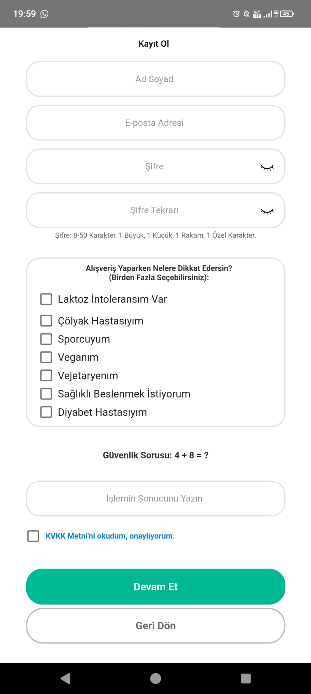

BES-IN
Bu projenin kısa özeti ve yapılış amacı buraya gelecek.

1. Aşama: Kayıt Ekranı
Burda kullanıcılarımz
Görsel 2
2. Aşama: Veritabanı ve Altyapı
Görsel 2'nin açıklaması. Kağıda çizdiğin gibi, bu sefer yazı solda resim sağda kalacak.
Görsel 3
3. Aşama: Geliştirme
Görsel 3'ün açıklaması. Adım adım anlatmaya devam ediyoruz.
Görsel 4
4. Aşama: Sonuç ve Test
Görsel 4'ün açıklaması. Projenin son hali ve nasıl çalıştığı hakkında bilgiler.